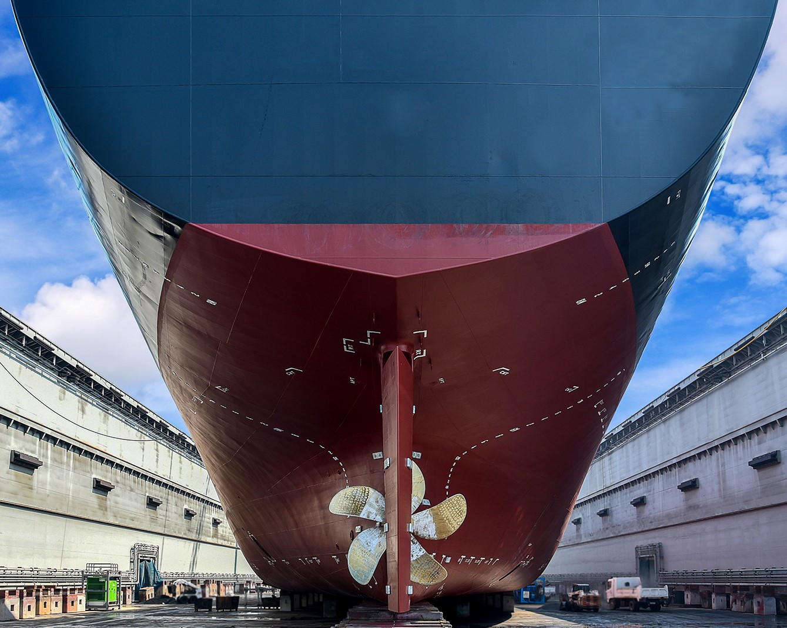

A key element for the success of a modern Marine Company is its
strict adherence to the relevant rules /regulations and industry standards
as well as the adoption of voluntary environmental and safety measures.
This coupled with a well-planned proactive maintenance program for the vessels,
their equipment and systems, results in maximising the availability of the fleet,
minimising costly repairs and providing to our charterers a safe, high-quality,
reliable shipping service.
OPERATIONS
Our fleet operates worldwide with the aim of safely carrying load for our customers.
Our various type vessels (KAMSARMAX, CAPE BULK CARRIER, PANAMAX BULK CARRIER, SUPRAMAX)
load and discharge cargoes on a daily basis.
All our ships are operated to the highest standards, offering first class service to
our customers in terms of safety, navigation, cargo handling, commercial responsiveness
and customer focus.

PERFORMANCE
The Fleet Performance Department is responsible to monitor the fuel consumption and
emissions related performance of the fleet to ensure environmental sustainability.
They collect data, analyze performance (covering engine, hull, propeller and operational),
detect underperformance and its cause.
The Fleet Performance Department drives innovation and supports the Management, Chartering,
Operations and Technical departments in decision making.
CREWING
Generally, all ships are manned with two nationalities i.e. the fleet is predominantly manned
with seafarers from Greece and the Phillipines, with a number of Officers / Petty Officers from
Romania and Ukraine. The employment of Greek seafarers meets or exceeds the minimum mandatory
requirements of the Flag Administration (Greece) and the remaining seafarers up to the
above-defined manning level are normally recruited from Philippines. In this respect all Senior
Officers, the majority of Junior Officers and a number of other seafarers are from Greece.
A limited number of other nationalities may be employed as is needed.
CHARTERING
The chartering activities, on both voyage and period charter, are done on the basis of building
partnerships with first class charterers to ensure their cargoes are carried safely, without
operational issues and to ensure our partners/customers get the first class service they expect.